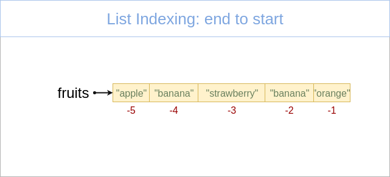

Keyboard shortcuts:
N/СпейсNext Slide
PPrevious Slide
OSlides Overview
ctrl+left clickZoom Element
If you want print version => add '
?print-pdf' at the end of slides URL (remove '#' fragment) and then print.
Like: https://wwwcourses.github.io/...CourseIntro.html?print-pdf
Python Intro. Syntax. Basic Data Types.
Created for

Iva E. Popova, 2024,

Get familiar with Python Language

picture source: @imgur.com
from If programming languages were essays...
{kind=link}
History and versions
- Creator: Guido van Rossum
- Named after Monty Python's Flying Circus comedy show.
- Python 1.0 - January 1994
- Python 2.0 - October 2000
- Python 3.0 - December 2008
- Reference: Active Python Releases @python.org
What's the use of Python?
- Python is a general-purpose programming language, used for:
- Web and Internet Development
- System administration (incl. cloud)
- Data Science, Big Data, Machine Learning
- Scientific computing
- Education
- Mobile apps development
- Embedded devices (incl. Raspberry Pi, Arduino, ...)
Python Interpreter
- Python is an interpreted language
- An interpreter is a program that directly executes the instructions in a high-level language, without converting it into machine code
- A compiler is a program that translates the source code into byte/machine code, and then execute it.
- Contemporary interpreters, like Python, use internal compiler to optimize their work.

Python implementations/distributions
Python is an open source project: Python's github
- CPython - the official Python distribution.
- PyPy - faster and compliant with Python2 and Python 3
- Jython - Python for the Java Platform.
- IronPython - the Python programming language for the .NET Framework.
- Pyjs - contains a Python-to-JavaScript compiler, an AJAX framework and more.
What's in a program
| Bulgarian | Python | |
|---|---|---|
| novel | <=> | program |
| paragraph | <=> | block |
| sentences | <=> | instructions |
| types of sentences (declarative, imperative,...) | <=> | types of instructions (statements, expressions) |
| grammar rules (can be ambiguous) | <=> | grammar rules (could not be ambiguous) |
What's in a Python program
- A program consists of set of instructions, which are executed by the computer.
- In Python, we write each instruction on a new line.
- Instructions which performs one task are separated as a
block. - In Python the block is not separated by braces, as in other programming languages, but by same indentation of the instructions in it.
Write your first Python Program using JupyterLab
- Launch JupyterLab
- Create new notebook and name it
hello_world.ipynb - Then write next code into a code cell, but write your name inside quotes:
my_name = 'anonymous'
print('Hello, ', my_name)
The Zen of Python
import this
The Zen of Python, by Tim Peters
Beautiful is better than ugly.
Explicit is better than implicit.
Simple is better than complex.
Complex is better than complicated.
Flat is better than nested.
Sparse is better than dense.
Readability counts.
Special cases aren't special enough to break the rules.
Although practicality beats purity.
Errors should never pass silently.
Unless explicitly silenced.
In the face of ambiguity, refuse the temptation to guess.
There should be one-- and preferably only one --obvious way to do it.
Although that way may not be obvious at first unless you're Dutch.
Now is better than never.
Although never is often better than *right* now.
If the implementation is hard to explain, it's a bad idea.
If the implementation is easy to explain, it may be a good idea.
Namespaces are one honking great idea -- let's do more of those!
Or just read it here: The Zen of Python
Clean syntax
- Statements are terminated by EOL (new line), not by semicolons!
- Though, you can use semicolons if you wish
- Block of statements is wrapped by the same indentation, not by curly braces
- You can use spaces or tabs for indent.
- Mixing spaces with tabs can lead to errors or bugs.
Python syntax vs JavaScript syntax demo
- Both programs deal with same task: to find the sum and product of array
numbers = [1, 2, 3, 4]
product = 1
for i in numbers:
product *= i
total = sum(numbers)
print(total, product)
var numbers = [1, 2, 3, 4],
total = 0,
product = 1;
for (i = 0; i < numbers.length; i += 1) {
total += numbers[i];
product *= numbers[i];
}
console.log(total, product)
- Other examples for comparing Python vs other languages you can find: rosettacode.org
Same indent!

This code will lead to IndentationError
Do not mix space and tabs

This code will lead to IndentationError
Wrong indentation can cause bugs!

Can you spot the bug?
Comments
Comments
Why to comment our code?
- Python interpreter ignores every part of a program, which is marked as a "comment"
- Comments are used to explain and/or summarize a part of our program in a more readable manner
- For debugging purposes - when we need fast to ignore a block of code
- For other meta information about the program (programme name, author, date, etc.)
- A well commented program is more readable and maintainable
How to comment our code?
- Single line comment:
# - every line which starts with
#(hash tag) is a comment and is ignored py Python interpreter
# this is a just a comment: no print("whatever") will happens
print("this will be printed, of course")
### a more semantic example for comment:
# check if a triangle with sides (3,4,5) is a Pythagorean:
print(3**2 + 4**2 == 5**2)
Reference
PEP8 - CommentsData Types Introduction
Data Types Introduction
- Programming is about manipulating data
- Each programming language defines its data types and the corresponding operations which can be performed on each data type.
- In Python, each data type literal is represented internally as object
Numeric Data Types
Numeric Data Types
- In Python we can use integer, floating point and complex numbers
- Numbers are immutable data type!
- Most arithmetic operations are natively defined in Python.
- More complex math functions are defined in the math module
integer numbers
we can use positive and negative integers:
# positive integer literal:
>>> 42
42
>>> +42
42
# negative integer literal:
>>> -42
-42
floating point numbers
we can use positive and negative floating point numbers
>>> 3.1234
3.1234
>>> -0.255
-0.255
# leading zero can be skipped:
>>> .44
0.44
>>> -.55
-0.55
>>>
Underscores in Numeric Literals
- As of Python 3.6 you can use underscores in numeric literals to improve readability of long numbers
>>> 1_000_000 + 2_000_000
3000000
arithmetic operations
- Python supports the standard arithmetic operations:
- Numeric Types@python docs
The division operator "/" in python2 returns the integer part(i.e. works like Floor division), while in python3 it returns the float result
Example: arithmetic operations
>>> 5-3
2
>>> 5*3
15
>>> 5/3
1.6666666666666667
>>> 5//3
1
>>> 5%3
2
Example: python3 vs python2 division
>>> 5/3
1
>>> 5/3
1.6666666666666667
>>> 5//3
1
Python3 adds the "//" operator for Integer division
Floating Point Arithmetic: Issues and Limitations
- Decimal numbers are represented in binary system.
- Most decimal fractions cannot be represented exactly as binary fractions, which leads to peculiar results
- Reference: Floating Point Arithmetic: Issues and Limitations @python.org
print(0.1+0.2)
# OUTPUT:
# 0.30000000000000004
the math module
- math module is native to every python distribution.
- to use its functions you only have to import it in your program:
- math — Mathematical functions @python docs
import math
# do something with math
Built-in math functions
Example: math module methods
>>> import math
>>>
>>> math.pi
3.141592653589793
>>> math.floor(math.pi)
3
>>> math.pow(2,3)
8.0
>>> math.sqrt(9)
3.0
>>> math.ceil(2.9)
3
>>> math.ceil(2.1)
3
>>> math.floor(2.9)
2
>>> math.floor(2.1)
Example: math built-in functions
>>> round(2.51)
3
>>> round(2.49)
2
>>> max(1,2,3)
3
>>> min(1,2,3)
1
>>> abs(2-5)
3
Strings in Python
Strings in Python
Definition
- Strings are immutable sequences of Unicode code points (will be discussed further).
- Single-line strings literal should be closed in single or double quotes
- No difference between single or double quoted strings!
- Multi-line strings literal should be closed in triple single or double quotes
Examples
>>> "this is a single line string"
'this is a single line string'
>>> 'another single line string with UTF charactes like üç∑'
'another single line string with UTF charactes like üç∑'
>>> 'but can not be spred in multiple lines
File "", line 1
'but can not be spred in multiple lines
^
SyntaxError: EOL while scanning string literal
Examples
>>> """infact you can -
... if you use these triple quotes"""
'infact you can - \nif you use these triple quotes'
>>> '''or these triple quotes
... can separate multiline without errors'''
'or these triple quotes\ncan separate multiline without errors'
Strings operations
Strings operations
concatenation: +
The operation is defined only when both operands are string, I.e. Python can not concatenate apples with oranges:
#string concatenation with '+':
>>> "ala" + "bala"
'alabala
>>> "1" + "2"
'12'
>>> "1" + 3
Traceback ...
TypeError: cannot concatenate 'str' and 'int' objects
repetition: *
One of the operands must be string, the other - integer
>>> "-" * 10
'----------'
>>> "1" * 10
'1111111111'
>>> ">hello<" * 3
'>hello<>hello<>hello<'
>>> "a" * "3"
Traceback ...
TypeError: can't multiply sequence by non-int of type 'str'
String Methods
# string methods:
>>> "ada".capitalize()
'Ada'
>>> "alabala".count("a")
4
>>> "Alabala".count("a")
3
>>> "AlabAla".find("a")
2
>>> "alabala".replace("a", "o")
'olobolo'
>>> "one,two,three".split(",")
['one', 'two', 'three']
What a method is will be discussed further!
For now, you can try to look at the docs: String Methods @docs.python.org
Variables
Variables
What is a variable in Python?
- A name (identifier) for "container" (placed in RAM) in which values can be stored and retrieved
- When we say that we set value in a variable, it should be understood as to write a value into the corresponding container.
- In Python we speak about name binding, when we assign a value to variable.
- We can get the variable value, i.e. to read the content of the corresponding container
A very simplified view of variables in RAM
x = 99
y = 3.141516
first_name = "ada"
sur_name = "byron"
num_list = [1,2,3,4,5]

Identifiers rules
- Variables names should follow next rules:
- Start with letter or underscore
- Followed by zero or more letters, underscores and digits
- Variable names are case-sensitive
- Identifiers and keywords @python docs
Naming Conventions
- Function names should be lowercase, with words separated by underscores as necessary to improve readability.
- Variable names follow the same convention as function names.
- mixedCase is allowed only in contexts where that's already the prevailing style (e.g. threading.py), to retain backwards compatibility.
- PEP 8 (Function and Variable Names)
example
x = 99
print("x = ", x)
first_name = "ada"
print("first_name = ", first_name)
print("first_name = ", First_name) #NameError: name 'First_name' is not defined
sur-name = "byron" #SyntaxError: can't assign to operator
Name binding
- Name binding is the association between a name and an a value
- Note, that all values in Python are represented as objects
- We can bind a value to a name with the
assignmentoperator (=) - We can check the unique identity of an object by the
id()built-in function. - CPython uses the object's memory address for the unique id
a = 2
print(id(a))
# 9413216
Name binding

Name binding - aliasing
- When the right-hand side of the assignment is an existing variable, Python did not create a new object, but gives that object another name, an alias.
x = 1
y = x
a = [1]
b = a
print(id(x), id(y))
print(id(a), id(b))
# 140214860841200 140214860841200
# 140214861591552 140214861591552
Garbage collection
- Garbage Collection is a process of reclaiming the unused runtime memory automatically.
a = 5
print(id(a))
# 9413312
# Now we create a new object, and bind it to 'a', because numbers are immutable:
a = 6
print(id(a))
# 9413344
# the object [id:9413312, value:5] will be deleted by the garbage collector, as nothing points to it
String Interpolation
String Interpolation
Before Python 3.6
- Before Python 3.6 we have to use the concatenation operator when we want to display some string and some variables interpolated into it.
- Python (before v.3.6)do not support variables interpolation in strings like in bash/Perl/PHP/...
# not possible in Python!!!
$name = "Iva";
print("Hello $name !")
Hello Iva !
Literal String Interpolation (f-strings)
- Python 3.6 added "f-strings" which provide a way to embed expressions inside string literals, using a minimal syntax
- More on f-strings:
- Formatted String Literals @python tutorial
- Format String Syntax @python docs
value = 42
# str.format() method:
'The value is {}.'.format(value)
# f-strings:
f'The value is {value}'
Examples
user_name = input("hi, what's your name: ")
user_surname = input("will you tell me your sur name?:")
print(f"Nice to meet you, {user_name} {user_surname} !")
Task: modify the program, such that the user names will be displayed capitalized
Escape Sequences
- The backslash (\) character is used to escape characters that otherwise have a special meaning, such as newline, backslash itself, or the quote character.
- With escape sequence we can insert characters that are illegal in a string, like quotes or new line symbol.
- The most used escape sequences are given bellow:
| escape character | result |
|---|---|
| \' | Single Quote |
| \" | Double Quote |
| \n | New Line |
| \t | Tab |
| \\ | Backslash |
Example
print('|Jhoh\'s pub|')
print('|line1\nline2|')
print('|abc\t123|')
#OUTPUT
|Jhoh's pub|
|line1
line2|
|abc 123|
Sequence Data Types - Overview
Sequence Data Types - Overview
What is a Sequence?
A sequence in Python is a container, storing ordered collection of objects.

What is a Sequence?
- The position number of an item in a sequence is called index.
- Indexes starts counting from 0.
- All sequence data type in Python supports common sequence operations.
length, indexing, slicing, concatenation,.
repetition, membership test, min, max, count, index- Each sequence data type has also own methods for performing specific operations.
What is a Sequence?

What is a Sequence? - examples
# list:
fruits = ["apple", "banana", "strawberry", "banana", "orange"]
# tuple:
point3d = (4, 0, 3)
# range:
digits = range(0,10)
# string:
user_name="ada byron"
- The Sequence Data Types in Python are:
- Lists.
- Tuple.
- Range.
- Strings are also considered as a sequence.
Lists
Lists
What is a List?
- A list is a mutable (i.e. changeable) sequence of objects.
- we can add or delete elements to the list.
- Lists, being mutable sequence, can grow or shrink.
- There is no restriction of the type of the objects being in a list.
- The objects in a list can repeat many times.
- Lists are general-purpose data structure.
Create list by literal
- A List literal is denoted by a square brackets
- Items in the list are separated by comma
### create empty list:
empty_list = []
### create list of numbers:
users = [1,2,3,4,5]
### create list of lists
matrix = [
[1,2,3],
[4,5,6],
[7,8,9]
]
Retrieve item from list
item = list_name[index]
### create list:
fruits = ["apple", "banana", "strawberry", "banana", "orange"]
### retrieve the first item in the list:
item1 = fruits[0]
# apple
### retrieve third item in the list.
item3 = fruits[2]
# strawberry
# retrieve last item in the list:
itemN = fruits[-1]
# orange
We will discuss more indexing operation in Common Sequence Operations.
Change list item
list_name[index] = value
### create list:
fruits = ["apple", "banana", "strawberry"]
### Change second list item
fruits[1] = "plum"
print( fruits )
# ['apple', 'plum', 'strawberry']
### Change last list item
fruits[-1] = "orange"
print( fruits )
# ['apple', 'plum', 'orange']
Tuples
Tuples
What is a Tuple?
- A tuple is immutable (i.e. not changeble) sequence of data.
- once created a tuple can not be changed! No grow or shrink can happens.
- Useful for fixed data.
- Tuples are faster than lists and consumes less memory, but they are not general-purpose.
Create tuple from literal
- Tuple literal is denoted by parentheses
- Items in the tuple are separated by comma
- A single item tuple is created with trailing comma, like
(1,)
### create empty tuple:
empty = ()
print( empty )
# ()
### create tuple with one element - note the trailing comma!
# if you write t = (99), it will be an integer, not tuple
t = (99,)
print(t)
# (99,)
### create tuple of 3 elements:
point3d = (4, 0, 3)
print(point3d)
# (4, 0, 3)
Retrieve item from tuple
item = tuple_name[index]
# create a tuple
address = ('Bulgaria', 'Sofia', 'Nezabravka str', 14)
# retrieve tuple items
country = address[0]
town = address[1]
street = address[2]
street_num = address[3]
print(country, town, street, street_num)
# Bulgaria Sofia Nezabravka str 14
Examples
### create tuple with 3 elements:
ada_birth_date = (10, "December", 1815)
# retrieve tuple elements:
ada_birth_day = ada_birth_date[0]
ada_birth_month = ada_birth_date[1]
ada_birth_year = ada_birth_date[2]
print("Ada is born on {} {} in {}".format(ada_birth_month, ada_birth_day, ada_birth_year))
# Ada is born on December 10 in 1815
Change tuple? No Way!
- Tuples are immutable and can not be changed!
### change a tuple item:
address[0] = "France"
# TypeError: 'tuple' object does not support item assignment
Change tuple's mutable value? - yes, you can
- Tuple is immutable, but this does not means the we can not reassign it's mutable value, like list
t = ([1,2,3],)
# change third element in the list inside a tuple:
t[0][2] = 100
print(t)
#([1, 2, 100],)
Lists vs Tuples
Lists vs Tuples
- Performance
- Tuples requires less memory and are faster than lists
- Usage
- Use list, when you want to add/remove/change items in the list
- Use tuple, when you want to preserve your data from being changed. Or when you need to optimize your program.
Range Object
Range Object
What is a Range Object?
- The range type represents an immutable sequence of numbers.
- It's used to generate a number sequence, limited between pre-given start and stop integer values.
- It's typical use in Python is with
forloops. - The advantage of the range type over a regular list or tuple is that a range object will always take the same (small) amount of memory, as it only stores the formula by which the sequence of numbers will be generated
Syntax
range(stop)
range(start, stop[, step])
- start is the only required argument, and it denote that range of generated integers will end at stop - 1
- start is optional and if omitted defaults to 0
- step is optional and if omitted defaults to 1.
- start, stop and step must be integers!
- step can't be 0 (or "ValueError" is raised), but can be negative integer.
- If the given arguments did not form a sequence, an empty sequence will be returned.
- Reference: ranges @python3 docs
Examples
range(0,10)
# generates the sequence: [0, 1, 2, 3, 4, 5, 6, 7, 8, 9]
range(10)
# same as above
range(2, 10, 2)
# generates the sequence: [2, 4, 6, 8]
range(9, -1, -1)
# generates the sequence: [9, 8, 7, 6, 5, 4, 3, 2, 1, 0]
range(-3, 4)
# generates the sequence: [-3, -2, -1, 0, 1, 2, 3]
range(9, -1, 1)
# incorrect sequence formulae, will return empty sequence
Print range sequence
- Note, that when you just print a range object it will not return the sequence of numbers, but just the formula:
- If you want to print the generated sequence, you can use the builtin
list()ortuple()function: - But the most common way to use the range items is to loop over them:
r = range(0, 10, 2)
prin
# range(0, 10, 2)
r = range(0, 10, 2)
print(list(r))
# [0, 2, 4, 6, 8]
### iterate from 0 up to 10, step = 1 (default)
for i in range(10):
print(i, end=" ")
# 0 1 2 3 4 5 6 7 8 9
Range in for: example 1
### iterate from 10 up to -1, step = -1
for i in range(10,-1, -1):
print(i, end=" ")
# 10 9 8 7 6 5 4 3 2 1 0
Range in for: example 2
### iterate from 2 up to 10, step = 2
for i in range(2, 10, 2):
print(i, end=" ")
# 2 4 6 8
Range in for: example 3
### iterate from -10 up to 0, step = 2
for i in range(-10, 0, 2):
print(i, end=" ")
# -10 - 8 - 6 - 4 - 2
Common Sequence Operations
Common Sequence Operations
Next operation can be used on all sequence types, with the exception that range() objects can not be concatenated or repeated (but the sequences they produced can).
| Operation | Operator |
|---|---|
| Concatenation | + |
| Repetition | * |
| Membership Testing | in (not in) |
| Indexing | [i] |
| Slicing | [i:j] |
Concatenation +
- Concatenate two sequences and return the resulting sequence
- Only srings, lists and tuples support the concatenation operation.
- ranges can not be concatenated.
### Let's have two lists:
fruits = ["apple", "banana", "strawberry"]
numbers = [1,2,3]
### We can concatenate them:
concat_list = fruits + numbers
print(concat_list)
# ['apple', 'banana', 'strawberry', 1, 2, 3]
Concatenation - lists example
num_list = [1,2,3]
alpha_list = ["a", "b", "c"]
conc_list = num_list + alpha_list
print(conc_list)
# [1, 2, 3, 'a', 'b', 'c']
Note, that the result is a list!
Concatenation - tuples example
date1 = (31, "December", 2017)
date2 = (10, "Mart", 1999)
conc_date = date1 + date2
print(conc_date)
Note, that the result is a tuple!
Repetition *
- Repeats a sequence a given number of times and return the resulting sequence
- The multiplier must be an integer value!
- Only srings, lists and tuples support the repetition operation.
- ranges can not be repeated.
### Let's have a list:
numbers = [1, 2, 3]
### Repetition
rep_list = numbers * 3
print(rep_list)
# [1, 2, 3, 1, 2, 3, 1, 2, 3]
Repetition - example
num_list = [1, 2, 3]
alpha_list = ["a", "b", "c"]
print(num_list*3)
print(alpha_list*3)
# [1, 2, 3, 1, 2, 3, 1, 2, 3]
# ['a', 'b', 'c', 'a', 'b', 'c', 'a', 'b', 'c']
Membership Testing in, not in
- x in sequence
- returns True if x is member of sequence
- returns False if x is NOT member of sequence
- x not in sequence
- returns True if x is NOT member of sequence
- returns False if x is member of sequence
Membership Testing - list example
### Let's have two list:
fruits = ["apple", "banana", "strawberry"]
numbers = [1, 2, 3]
### Membership Testing (in):
print("banana" in fruits)
# True
print("banana" in numbers)
# False
### Membership Testing (not in):
print("banana" not in fruits)
# False
print("banana" not in numbers)
# True
Membership Testing - range example
# Let's have a range:
r = range(0,10)
print(3 in r)
# True
print(21 in r)
# False
Indexing from start to end

- First sequence item is with index 0.
- Next sequence item indexes increments with 1
Indexing from start to end - example
### create list of numbers:
numbers = [1,2,3,4,5]
### index from start to end:
print(numbers[0],numbers[1],numbers[2],numbers[3],numbers[4])
# 1 2 3 4 5
Indexing from end to start
{kind=link}
- Last list item is with index -1
- Next sequence item indexes decrements with 1
Indexing from end to start - example
### create list of numbers:
numbers = [1,2,3,4,5]
### index from end to start:
print(numbers[-1],numbers[-2],numbers[-3],numbers[-4],numbers[-5])
# 5 4 3 2 1
Indexing from end to start - use case
- The pythonic way to get the last element of a sequence is by using the
-1index, not bylen()-1
fruits = ["apple", "banana", "strawberry"]
# the pythonic way to print last element
print(fruits[-1])
# "strawberry"
# not pythonic (though it works):
print(fruits[len(fruits)-1])
# "strawberry"
Slicing - syntax
sliced = sequence[start:end:step]
- Slice a sequence from start up to end indexes with the given step
- start, end and step are optional!
- At least one column (
:) is required!
a[start:end] # get items with indexes from start through end-1
a[start:] # get items with indexes from start through the rest of the array
a[:end] # get items with indexes from the beginning through end-1
a[:] # a copy of the whole array
Reference: slice @python docs
Examples
>>> str = "abcdef"
>>> str[2:3]
'c'
>>> str[2:4]
'cd'
>>> str[-1:2:-1]
'fed'
>>> str[-1::-1]
'fedcba'
# same, but ugly:
>>> str[-1:-7:-1]
'fedcba'
>>> str[]
SyntaxError: invalid syntax
Examples
>>> str = "abcdef"
>>> str[:]
'abcdef'
>>> str[:3]
'abc'
>>> str[3:]
'def'
>>> str[::2]
'ace'
>>> str[::-1]
'fedcba'
Loop on sequence
Loop on sequence
Syntax
for item in sequence:
# do something with item
### loop on list items:
for item in [1,2,3]:
print(item)
### loop on tuple items:
for item in (10, "December", 1985):
print(item)
### loop on string items:
for item in "byron":
print(item)
### loop on range items:
for item in range(1,3):
print(item)
Loop on indexes of sequence: C-style
- As we saw, Python doesn't have C-style for loop, but we can emulate it with:
user_name = "ivan"
for i in range(len(user_name)):
print("{} - {}".format(i, user_name[i]))
0 - i
1 - v
2 - a
3 - n
Note, that this is not the Pythonic way of looping on sequence by index.
Loop on indexes of sequence: Pythonic way
- To get the index and the item in a
forloop, we can also use the enumerate() built-in function:
for i,l in enumerate(user_name):
print("{} - {}".format(i, l))
0 - i
1 - v
2 - a
3 - n
More on lists
More on lists
Create list from sequence: list()
- With
list()function we can create a list from any sequence:
### list from tuple:
point3d = (4, 0, 3)
point3d_list = list(point3d)
print(point3d_list)
# [4, 0, 3]
### list from range:
digits = range(0, 10)
digits_list = list(digits)
print(digits_list)
# [0, 1, 2, 3, 4, 5, 6, 7, 8, 9]
### list from string:
user_name = "ada byron"
user_name_list = list(user_name)
print(user_name_list)
# ['a', 'd', 'a', ' ', 'b', 'y', 'r', 'o', 'n']
Other List Operations
fruits = ["apple", "orange", "strawberry"]
### Delete a list item by index
del fruits[1]
print(fruits)
# ['apple', 'strawberry']
Basic List Methods
### Create list of fruits:
fruits = ["apple", "banana", "strawberry"]
### Appends item the end of the list:
fruits.append("plum")
print(fruits)
# ['apple', 'banana', 'strawberry', 'plum']
### Insert item in specified position (by the index given as first parameter)
fruits.insert(2, "NEW")
print(fruits)
# ['apple', 'banana', 'NEW', 'strawberry', 'plum']
### Retrieve the item at the end and remove it from the list:
item = fruits.pop()
print(item, fruits)
# plum ['apple', 'banana', 'NEW', 'strawberry']
### Retrieve the item at the index given and remove it from the list:
item = fruits.pop(2)
print(item, fruits)
# NEW ['apple', 'banana', 'strawberry']
### Remove the first item from a list by the given value:
fruits.remove("banana")
print(fruits)
# ['apple', 'strawberry']
### Reverse the items of a list in place:
fruits.reverse()
print(fruits)
# ['strawberry', 'banana', 'apple']
For more - check the: python.org tutorial
Lists of lists
- A list item can be any data type, including list, tuples and so on.
### create list of lists:
matrix = [
[1,2,3],
[4,5,6],
[7,8,9],
]
### retrieve the first element from the first list:
print(matrix[0][0] )
# 1
### retrieve the last element from the first list:
print(matrix[0][-1])
# 3
### retrieve the first element from the last list:
print(matrix[-1][0])
# 7
### retrieve the last element from the last list:
print(matrix[-1][-1])
# 9
Slicing columns from "lists of lists" ?
- Python did not support syntax to slice columns from "multi dim" looking list
m = [
[1,2,3],
[4,5,6],
[7,8,9],
]
# trying to slice the second column ([1,5,8]):
print(m[:,1])
# TypeError: list indices must be integers or slices, not tuple
multi-dimensional arrays
- The package numpy contains powerful N-dimensional array objects and other numerical operations (we'll go into it in later topics).
- In order to use it, you need to install it first:
pip install numpy
import numpy
# lets create a python list
m = [
[1,2,3],
[4,5,6],
[7,8,9],
]
# create a numpy array from that list:
arr = numpy.array(m)
# now we can easily use numpy's multi-dim slicing:
print(arr[:,1])
#[2 5 8]
print(type(arr[:,1]))
List of tuples
### create list_of_tuples:
points = [
(1,2),
(3,4),
(5,6)
]
### retrieve the first element from the first tuple:
print(points[0][0])
# 1
### retrieve the last element from the first tuple:
print(points[0][-1])
# 2
### retrieve the first element from the last tuple:
print(points[-1][0])
# 5
### retrieve the last element from the last tuple:
print(points[-1][-1])
# 6
More on tuples
More on tuples
Create tuple from sequence: tuple()
- With
tuple()function we can create a tuple from any sequence:
### tuple from list:
fruits = ["apple", "banana", "strawberry", "banana", "orange"]
fruits_tuple = tuple(fruits)
print(fruits_tuple)
# ('apple', 'banana', 'strawberry', 'banana', 'orange'
### tuple from range:
digits = range(0, 10)
digits_tuple = tuple(digits)
print(digits_tuple)
# (0, 1, 2, 3, 4, 5, 6, 7, 8, 9)
### tuple from string:
user_name = "ada byron"
user_name_tuple = tuple(user_name)
print(user_name_tuple)
# ('a', 'd', 'a', ' ', 'b', 'y', 'r', 'o', 'n')
Change mutable item inside tuple? Yes!
- Tuple items can not be changed!
- If a tuple item is list - it will always be a list
- But, we can change the items inside a list!
Change mutable item inside tuple? - example
users = (
["Ivan", "Ivanov", 34],
["Maria", "Ivanova", 36],
["Asen", "Asenov", 20],
)
### try to change items inside a mutable tuple item:
users[0][2] = 100
print(users[0])
# ['Ivan', 'Ivanov', 100]
### try to change a tuple item:
users[0] = ["Petyr", "Petrov", 45]
# TypeError: 'tuple' object does not support item assignment
Dictionaries
Dictionaries
What is a Dictionary?
- An unordered collection of objects (values)
- Each value is associated with a unique key.
- A dictionary can be regarded as a collection of key:value pairs
- Dictionaries in Python are similar to associative arrays, hashes (hash tables) in other programming languages (PHP, Perl, Ruby)
Dictionary Structure

Syntax
dictionary = {
'key1': value 1,
'key2': value 2,
'keyN': value N
}
- There is no order in dictionary! We can not say if 'key1' pair will be before 'key2' pair
- In fact, after Python 3.5 the dict objects preserves insertion order, but relying on that property is risky.
- If you need an ordered dict structure - use OrderedDict objects from collections module/dd>
- Keys must be immutable data type. Usually they are strings.
- Keys must be unique. If multiple "key:values" pairs with the same key exists, only the last one pair will be present in the dictionary
Dictionaries - examples
en_bg_dict = {
'apple': 'ябълка',
'orange':'портокал',
'banana':'банан'
}
print(en_bg_dict['apple'])
# ябълка
Dictionaries - unique keys example
en_bg_dict = {
'apple': 'ябълка',
'orange':'портокал',
'banana':'банан',
'apple':'манго',
}
print(en_bg_dict['apple'])
# манго
Retrieve item from dictionary
Dictionary values can be retrieved using their respective key in square bracket:
item = dictionary_name[key]
prices = {
"apples": 2.50,
"oranges": 2.43,
"bananas": 3.50
}
apples_price = prices['apples']
print("{:.2f}".format(apples_price))
# 2.50
oranges_price = prices['oranges']
print("{:.2f}".format(oranges_price))
# 2.43
Change item in a dictionary
dictionary_name[key] = new_value
### change apples prices:
prices['apples'] = 2.20
print(prices)
# {'apples': 2.2, 'oranges': 2.43, 'bananas': 3.5}
Add item in a dictionary
dictionary_name[new_key] = new_value
prices = {
"apples": 2.50,
"oranges": 2.43,
"bananas": 3.50
}
### add new key:value pair:
prices['plums'] = 4.30
print(prices)
# {'apples': 2.5, 'oranges': 2.43, 'bananas': 3.5, 'plums': 4.3}
Delete item from dictionary: del - operator
del dictionary[key]
- Deletes the key:value pair whit the given key
prices = {
"apples": 2.50,
"oranges": 2.43,
"bananas": 3.50
}
### just delete 'oranges' key:value pair:
del prices['oranges']
print(prices)
# {'apples': 2.5, 'bananas': 3.5}
Delete item from dictionary: pop()
pop(key[, default])
- If key is in the dictionary, remove it and return its value, else return default.
- If no key or default values are given a KeyError is raised.
prices = {
"apples": 2.50,
"oranges": 2.43,
"bananas": 3.50
}
### remove 'apples' key:value pair from the dictinary, and return its value
apples_price = prices.pop('apples')
print(apples_price, prices)
# 2.5 {'oranges': 2.43, 'bananas': 3.5}
apples_price = prices.pop('apples', 5.00)
print(apples_price)
# 5.0
Get all dictionary keys: keys()
- the
keys()method of a dictionary returns a dict view object of dictionary keys, which means that when the dictionary changes, the view reflects these changes.
prices = {
"apples": 2.50,
"oranges": 2.43,
"bananas": 3.50
}
fruits = prices.keys()
print(fruits)
# dict_keys(['apples', 'oranges', 'bananas'])
keys() - dynamic view example
prices = {
"apples": 2.50,
"oranges": 2.43,
"bananas": 3.50
}
# get prices keys view:
prices_keys = prices.keys()
print("before:", prices_keys)
# add new key-value pair:
prices["new_key"]="new value"
# check if prices_keys contains the new key
print("after:", prices_keys)
before: dict_keys(['bananas', 'oranges', 'apples'])
after: dict_keys(['new_key', 'bananas', 'oranges', 'apples'])
Get all dictionary values: values()
- the
values()method of a dictionary returns a dict view object dictionary values
prices = {
"apples": 2.50,
"oranges": 2.43,
"bananas": 3.50
}
price_list = prices.values()
print(price_list)
# dict_values([2.5, 2.43, 3.5])
values() - dynamic view example
prices = {
"apples": 2.50,
"oranges": 2.43,
"bananas": 3.50
}
# get prices values view:
prices_values = prices.values()
print("before:", prices_values)
# change a value:
prices["oranges"]=100
# check if prices_values reflects the change:
print("after:", prices_values)
before: dict_values([3.5, 2.5, 2.43])
after: dict_values([3.5, 2.5, 100])
Get all dictionary items (key-value pairs): items()
- the
items()method of a dictionary returns a dict view object of dictionary items, i.e. a view of key-value pairs
prices = {
"apples": 2.50,
"oranges": 2.43,
"bananas": 3.50
}
prices_items = prices.items()
print(prices_items)
dict_items([('bananas', 3.5), ('apples', 2.5), ('oranges', 2.43)])
items() - dynamic view example
prices = {
"apples": 2.50,
"oranges": 2.43,
"bananas": 3.50
}
# get prices items view:
prices_items = prices.items()
print("before:", prices_items)
# remove an item:
del prices["oranges"]
# check if prices_items reflects the change:
print("after:", prices_items)
before: dict_items([('apples', 2.5), ('oranges', 2.43), ('bananas', 3.5)])
after: dict_items([('apples', 2.5), ('bananas', 3.5)])
dict views in Python3 and Python2
- The
keys(),values()anditems()methods return dict view objects only in Python3. In Python2 they return lists. - If you need to convert a dict view object to a list in Python3, you may use the
list()method`
prices = {
"apples": 2.50,
"oranges": 2.43,
"bananas": 3.50
}
print(list(prices.keys()))
print(list(prices.values()))
print(list(prices.items()))
# Output
# ['apples', 'oranges', 'bananas']
# [2.5, 2.43, 3.5]
# [('apples', 2.5), ('oranges', 2.43), ('bananas', 3.5)]
Iterate over dictionary keys:
for key in dict_name:
# do something with a key
# this is equivalent to:
for key in dict_name.keys():
# do something with a key
prices = {
"apples": 2.50,
"oranges": 2.43,
"bananas": 3.50
}
for k in prices:
print(k)
bananas
apples
oranges
Iterate over dictionary values:
for value in dict_name.values():
# do something with a value
prices = {
"apples": 2.50,
"oranges": 2.43,
"bananas": 3.50
}
for v in prices.values():
print(v)
2.43
3.5
2.5
Iterate over keys and values
- This is the most often used and the most Pythonic construct for looping over dictionaries
for key, value in dict_name.items():
# do something with a key
# do something with a value
prices = {
"apples": 2.50,
"oranges": 2.43,
"bananas": 3.50
}
for fruit, price in prices.items():
print("{} - {}".format(fruit, price))
apples - 2.5
oranges - 2.43
bananas - 3.5
More on dictionaries
dictclass @python docs- Dictionary view objects @python docs
Exercises
task_best_students_scores.py
the task

- Represent the information given in student_scores table in appropriate data structure.
- From
student_scoresdata, create a new data structure namedbest_students_scores, storing the information (name and score) only for students with scores greater than 4.00 - Print out the names and scores from
best_students_scoresas shown:
Ivan - 5.00
Maria - 5.50
Georgy - 5.00
Hints
- In order to check if a value (i.e. "student score") is greater than 4.00 you can use next code
score = 4.55
if score>4.00:
# do something if True
# i.e. add student's name and score into best_students_scores
task_min_max_student_score.py
the task
- Using the same information as in previous task, i.e.
- Print out the name and score of the student with maximum score
- Print out the name and score of the student with minimum score

Maria - 5.5
Alex - 3.5
hints
- To find a min/max value from values, you can implement your own algorithm using only
ifstatement. - Or to use Python's built-in functions min() and max()
- You can use them on any sequence, like this:
- or on separate items, like this:
numbers = [2,3,1,5]
min_number = min(numbers)
max_number = max(numbers)
print(min_number)
print(max_number)
#OUTPUT
# 1
# 5
x = 2
y = 5
min_number = min(x,y)
max_number = max(x,y)
print(min_number)
print(max_number)
task_simple_word_index.py
the task
- Make a program which will counts the words frequency (the count) of a given text
apple and banana one apple one banana
a red apple and a green apple
a - 2
green - 1
banana - 2
and - 2
one - 2
red - 1
apple - 4
Hints
- For simplicity we will get the "words" as a space separated sequences in string.
- To get that list of words we can use the
str.split()method, as shown:
text = "some words delimited by spaces"
words_list = text.split()
print(words_list)
['some', 'words', 'delimited', 'by', 'spaces']
A more sophisticated output
- Display the words count as a table. Note that the first column width is equal to the length of the longest word
|apple | 4 |
|banana| 2 |
|one | 2 |
|a | 2 |
|and | 2 |
|green | 1 |
|red | 1 |
task_users_bills.py
the data
- A simplified data for telecom users are stored as two relational tables:
- Represent the data in appropriate data structures in order to:
- being able to add/remove records from each table
- find and print the name of the user with highest bill
- find and print the name of the user with lowest bill
id | name | number
---|---------|---------------
1 | "Maria" | "+39587111111"
2 | "Ivan" | "+39587222222"
3 | "Asen" | "+39587333333"
id | bill
---|---------
1 | 25.50
2 | 30.48
3 | 5.98
The user with highest bill - 30.48 is Ivan
The user with lowest bill - 5.98 is Asen